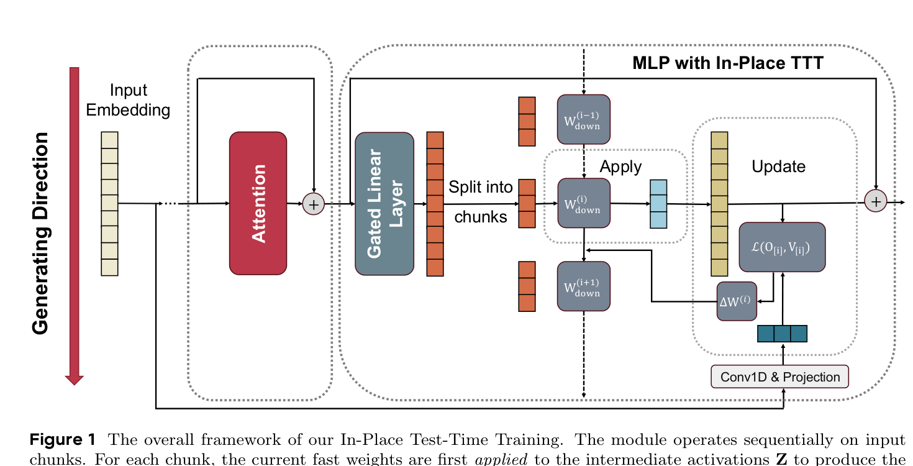
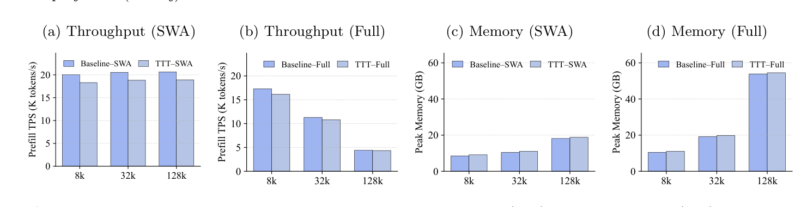
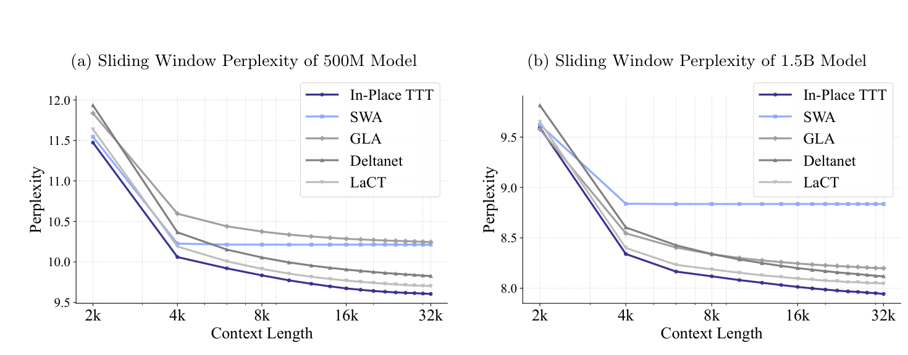
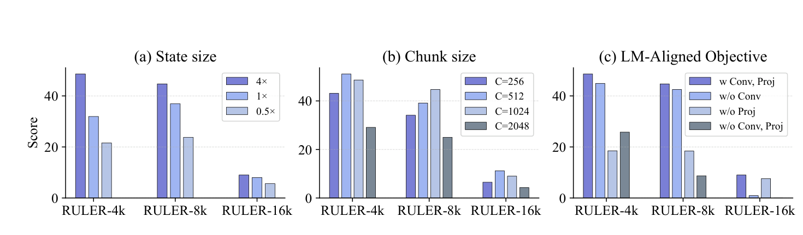

静态的“先训练后部署”范式，本质上限制了LLM无法根据持续涌入的新信息动态调整自己的权重：一旦部署，权重就冻结了。测试时训练（TTT）提供了另一种选择：在推理时更新一部分参数（快权重）来适应输入。
这篇ByteDance Seed + 北大的论文提出In-Place Test-Time Training（原地测试时训练）：不替代注意力、不添加随机新层，而是复用无处不在的MLP块：把它的最终投影矩阵当作可调的快权重，让LLM无需重训就获得TTT能力（“即插即用”增强），并在128k长上下文任务上让4B模型表现更优。
LLM的成功很大程度建立在静态“先训练后部署”范式上：模型先从海量语料获取知识，推理时保持固定。但这带来一个根本限制：一旦部署，权重无法更新，无法动态适应输入token提供的特定上下文，也限制了在长视野、演化任务上推理、以及像人一样从无边界的经验流中持续学习的能力。
上下文学习（In-context Learning）靠把所有历史token塞进上下文来缓解，但受限于上下文窗口（注意力二次复杂度）。测试时训练（TTT）则是另一条路：与其让静态模型更快，不如让模型在推理时动态更新参数来适应任意特定上下文。
TTT的核心是利用快权重W：一个小神经网络f_W: R^d到R^d，在测试时被快速更新。不同于训练后冻结的标准权重，快权重W像动态记忆，持续从序列存读上下文信息。处理输入时，每个token被投影出query(q_i)、key(k_i)、value(v_i)。
TTT通过两个顺序操作工作：更新操作（Update）：把W更新成把key k_i关联到对应value v_i，这被构造成一次最小化损失（如均方误差）的优化步骤，直觉上这一步把新信息编码进快权重；应用操作（Apply）：用更新后的W对key生成输出（如通过注意力或线性操作），读取记忆。两个操作首尾相接形成循环。
要把TTT成功应用到现代LLM，面临三个关键障碍：架构不兼容（先前研究总想替代注意力，而注意力对LLM能力至关重要，替代是高风险改动）；计算低效（per-token更新慢）；快权重目标与语言建模错配（通用重构目标教不对）。
之前的TTT研究主要把TTT定位成替代注意力的方案，且多在中等规模下做：这与现代数十亿参数的LLM相去甚远。替代注意力是高风险的架构改动；引入任何新的随机初始化层，又会和千百亿已训练参数冲突，需要昂贵且不现实的重训。
本文的核心洞见是彻底绕开这些挑战：不替换、不添加组件，而是复用无处不在的MLP块，让它兼任快权重。回忆TTT公式，对快权重的选择没有限制：MLP同样可以看作一种key-value记忆，充当预训练积累的海量通用知识的“慢权重”。很自然地，用这同一组件兼任自适应的“快权重”，在推理时动态内化瞬时、上下文内的信息。

形式上，采用广泛使用的gated MLP：O = [phi(H W_gate^T) 圆H W_up^T] W_down^T。本文把输入投影W_up和W_gate冻结为慢权重，只把最终投影矩阵W_down复用为可调快权重。通过只原地更新W_down，模型架构完整性得以保留：TTT从一次颠覆性重构，变成对LLM的轻量“即插即用”增强。
建立高效原地适应框架后，In-Place TTT的性能就取决于学习目标的设计。先前的TTT方法通常用重构目标（reconstruction target）：比如让W关联key与线性投影的value。但对于自回归语言建模，真正该对齐的是Next-Token-Prediction（NTP）：下一个token的预测。
本文用Language Modeling-Aligned目标替换通用重构目标：它显式与NTP对齐，且经过理论分析论证（3.3节）为何这样的目标对LLM的快权重更新更合理。这个原则性的目标，是In-Place TTT能在语言建模任务上超越通用TTT方法的关键。
除了架构兼容，这种原地设计还带来显著的计算效率收益。传统TTT方法为替代注意力而设计，被迫做低效的per-token更新以强制严格因果性、做细粒度token混合。

本文选择同步绕开这种权衡：因为只适配MLP块、注意力层原样保留，就摆脱了per-token约束，可以采用远比之前更高效的chunk-wise更新策略，进一步绕过小chunk的限制：消融实验验证了这套框架天然适合大chunk更新（chunk 512-1024时达到最优）。
过程如下：给定中间激活Z与对应的value目标V、输出O，把它们切成k个不重叠的C大小chunks。对每个chunk i执行两个顺序操作：应用操作（用当前快权重状态W_down^(i) 处理chunk）；更新操作（用该chunk的LM-aligned目标更新快权重）。这种分块处理兼容context parallelism，适合超长上下文。
两方面的实验验证了框架的有效性。作为“即插即用”增强：给预训练LLM套上In-Place TTT，能让一个4B参数模型在上下文长达128k的任务上达到更优性能：这是对无法扩展上下文窗口的静态基线的一次实打实的提升。


从头预训练：In-Place TTT网络consistently优于之前有竞争力的TTT方法。消融研究进一步验证了设计选择：特别是LM-aligned目标相对重构目标的优势，以及大chunk更新的适配性，为每个关键决策提供了依据。
In-Place TTT是一个解决TTT之于LLM关键障碍的实用框架，三个有原则的设计选择：复用现有MLP块的原地机制、高效chunk-wise更新规则、与语言建模对齐的理论支撑目标。
它不仅是预训练LLM的强力“即插即用”增强，从零训练也超过强基线。通过为边跑边适应提供可扩展方案，这项工作朝LLM更动态、持续学习的新范式迈出有希望的一步：正呼应开篇的追问：与其把模型冻结在部署那一刻，不如让它像人一样，从持续涌入的经验里一直学下去。
参考：https://arxiv.org/abs/2604.06169